Working with Data#
Contrast Stretch#
The contrast stretch tool provides sophisticated options for adjusting the contrast of images being displayed. This allows the user to bring out details in the image data that might otherwise not be perceptible.
Here is an example of the contrast stretch tool being used with the Caltech AVIRIS data.
{kind=link}
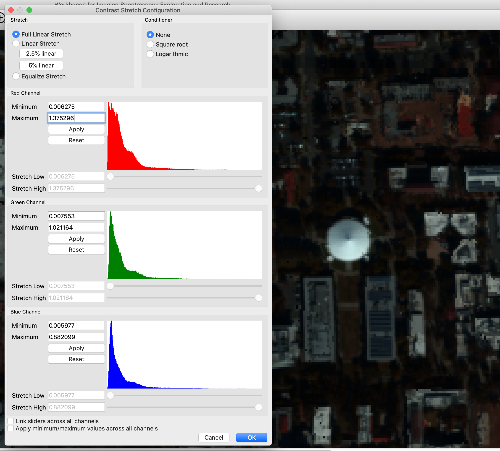
A histogram is shown for each display band, allowing one to see the distribution of values for that band. The user can select both the kind of contrast stretch used, and any conditioners to apply to the data before applying the stretch. Because it is useful to see the results of applying contrast stretch, changes in the dialog are immediately reflected in the affected raster displays. If the “Cancel” button is pressed, the changes will be discarded; otherwise, they will be kept when the dialog is closed.
Here is another example of applying a 2.5% linear stretch to the Caltech AVIRIS data:
{kind=link}
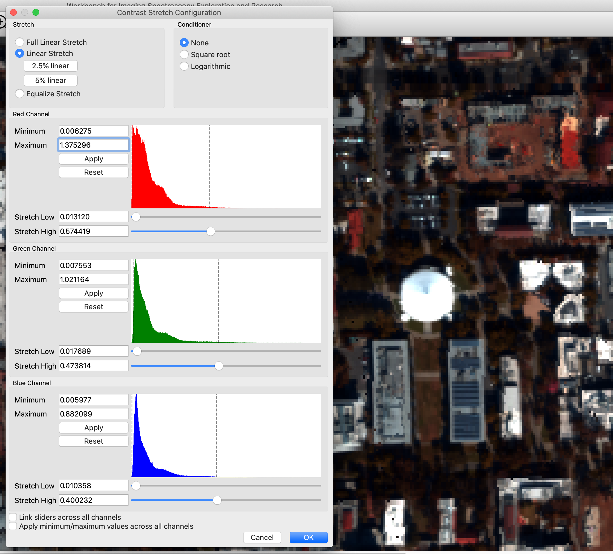
When applying a linear stretch, the sliders may be adjusted to control the endpoints of the contrast-stretch operation. Additionally, minimum and maximum values may be specified, to exclude noise that appears outside the range of useful data, or to focus in on a specific range of values.
How Contrast Stretch Calculations Work#
WISER supports manipulating the contrast stretch of data sets being displayed. This is often very helpful to bring out important details in the data.
Before discussing how stretch may be applied, it is important to understand what WISER must do to display data. The band data being displayed may be of many different data types; floating point or integer data, of various bit widths (e.g. 8, 16, 32 or 64 bits). Therefore, the data itself may cover many different ranges of values. The Workbench must map each band’s values to an integer color value in the range [0, 255]. If the Workbench is showing image data in RGB mode, this must occur for each color channel; if the Workbench is using grayscale then only one band is being used and it is mapped to a single [0, 255] value.
Note that raster data sets may specify “data ignore values” - values that should explicitly be ignored by tools working with the data. The Workbench filters out such values before any of this processing occurs; they are represented as NaNs, and all stretch calculations are implemented to ignore NaN values throughout.
Finally, note that the calculations for displaying raster data are not used when plotting spectra; spectrum calculations use the raster data directly.
Specifying Minimum and Maximum Limits on Band Data#
The Contrast Stretch UI provides users the ability to specify minimum and maximum limits on band data. This can be useful when raster data doesn’t specify a “data ignore value,” or when raster data is computed and has a large range of possible values, but only a small range of “useful” or “interesting” values.
The min/max limits are applied before any histograms are computed in the Contrast Stretch UI. Note that values outside of the min/max limits are simply filtered out; they are not clamped to the min/max limits. This is particularly important for N% linear stretches and histogram-equalization stretches; values outside of the min/max limits are completely ignored in the configuration of these stretches.
Overview of Display Calculations#
The Workbench follows this approach for displaying band data. This process is followed for each color channel being displayed.
The band data is normalized to either 32-bit or 64-bit floating point values in the range [0.0, 1.0].
Note that this normalization does not include the application of min/max limits; those limits are only used in the calculation of histograms in the Contrast Stretch UI.
Normalized values are usually 32-bit floating point; they will only be 64-bit floating point if the input data is also 64-bit floating point.
Apply any user-specified conditioner to the data. Conditioners are discussed below, but they are functions that consume normalized data and produce normalized data.
Apply any user-specified stretch to the data. Again, this mapping consumes normalized data and produces normalized data.
The final floating point values are in the range [0.0, 1.0], so they are multiplied by 255.0 and then cast to an 8-bit unsigned integer to yield a color intensity.
Stretch Types#
WISER supports three stretch types:
100% linear stretch
Linear stretch
Histogram equalization stretch
If WISER is displaying an RGB image, all color channels will use the same stretch type. It is not possible to configure WISER to display different color channels of the same image with different stretch types. (Obviously, the parameters for each channel may be different, as each channel’s data distribution will be different.)
100% Linear Stretch#
The “100% linear stretch” type causes the Workbench to follow a very straightforward, simple mapping of band data to color values in the range [0, 255]. The specific mapping depends on the type of the input data.
The minimum and maximum data value for each band is determined.
Values in each band are mapped to the range [0.0, 1.0] with a simple calculation: (value - band_min) / (band_max - band_min). This is typically represented as a 32-bit floating point value, but may be 64-bit floating point if the initial data was 64-bit floating point.
Values are then scaled to integers in the range [0, 255], with 0.0 mapping to 0, and 1.0 mapping to 255.
This approach is called “100% linear stretch” because it is just the “linear stretch” method, with low and high bounds taken from the band’s minimum and maximum values.
Linear Stretch#
The “linear stretch” type causes WISER to map band values in a range [stretch_low, stretch_high] to floating-point values in the range [0.0, 1.0].
Values less than stretch_low are mapped to 0.0.
Values greater than stretch_high are mapped to 1.0.
Values between stretch_low and stretch_high are linearly mapped to a value in the range [0.0, 1.0].
These intermediate values are then mapped to a color value in the range [0, 255].
WISER supports arbitrary values for the stretch_low and stretch_high values, and each color channel will specify its own values for stretch_low and stretch_high. The Contrast Stretch UI calculates and displays a histogram of the band data for each channel, to aid the user in selecting appropriate stretch_low / stretch_high values. In addition, the UI provides the ability to apply a 2.5% or 5% linear stretch across all channels.
For an N% linear stretch, WISER will choose each channel’s stretch_low and stretch_high such that (N/2)% of the low values will be excluded, and (N/2)% of the high values will be excluded. This is computed from the band’s histogram, and is therefore approximate. (As mentioned earlier, this histogram is computed after the min/max limits have been used to filter the band’s data.)
Histogram Equalization Stretch#
The “histogram equalization stretch” type causes WISER to map the normalized band values to floating point values in the range [0.0, 1.0] such that the density of the output values is uniform across this range. This is computed from the band’s histogram. (As mentioned earlier, this histogram is computed after the min/max limits have been used to filter the band’s data.)
Conditioners#
Conditioners can be useful when the input data’s distribution needs to be modified; for example, to bring out details in low intensity values and to mute variations in high intensity values. WISER supports three conditioner options:
No conditioner
Square root conditioner
Logarithmic conditioner
All conditioners consume normalized data, and produce normalized data. In the case of “no conditioner,” this can be thought of as the identity function, but the implementation simply does nothing.
It may be noted that sqrt(x) for x in [0.0, 1.0] already produces values only in the range [0.0, 1.0]. This is what WISER does for square root conditioning.
In the case of logarithmic conditioner, WISER uses the function log2(x + 1.0); when given values in the range [0.0, 1.0], this will only produce values in the range [0.0, 1.0].
Regions of Interest#
WISER supports the creation of Regions of Interest (ROI) on a raster data set. Regions of Interest may be created in both the main window and the zoom window. Once a ROI has been created, the average spectrum over the ROI may be plotted, and the spectra of all pixels in the ROI may be exported as an ASCII file.
Here are the Region of Interest tools in the main toolbar:
{kind=link}
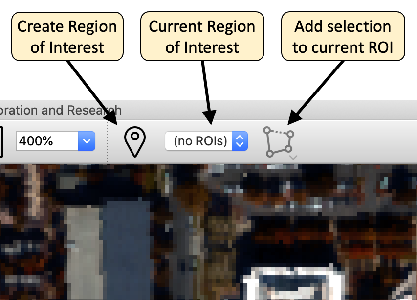
The first button allows a new Region of Interest to be created; a dialog allows the user to enter basic details about the Region of Interest. It is recommended to use a different color for each Region of Interest to avoid confusion.
{kind=link}
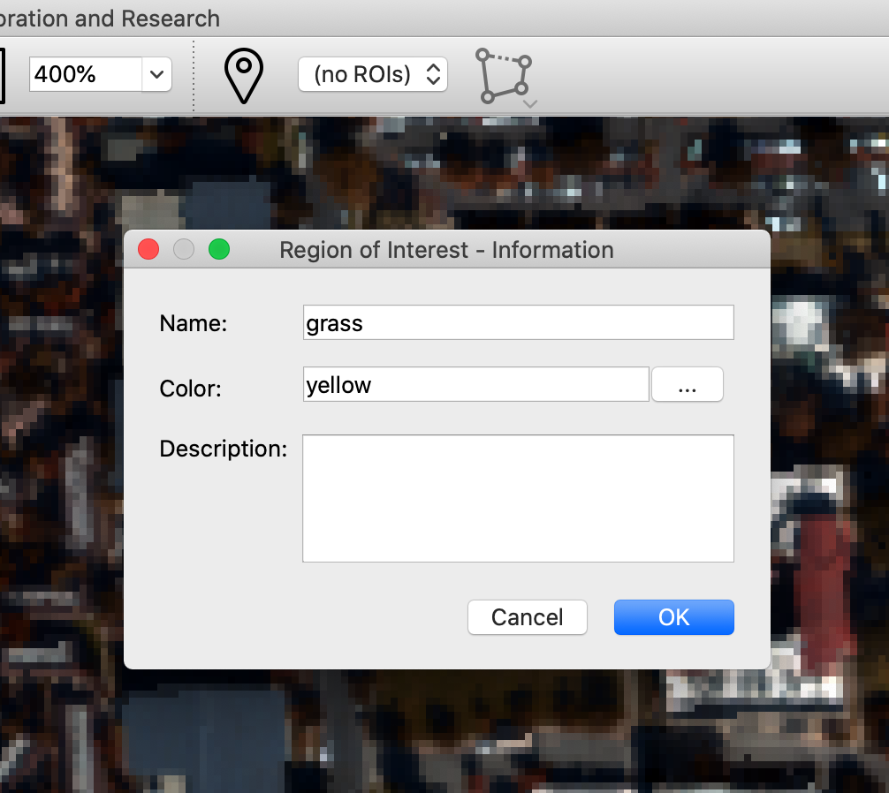
Once a Region of Interest is created, selections may be added to the ROI. The right button allows users to create rectangle, polygon, and point-set selections, which will then be added to the current Region of Interest. The ROI that the selection is added to may be changed with the drop-down combobox in the toolbar.
{kind=link}
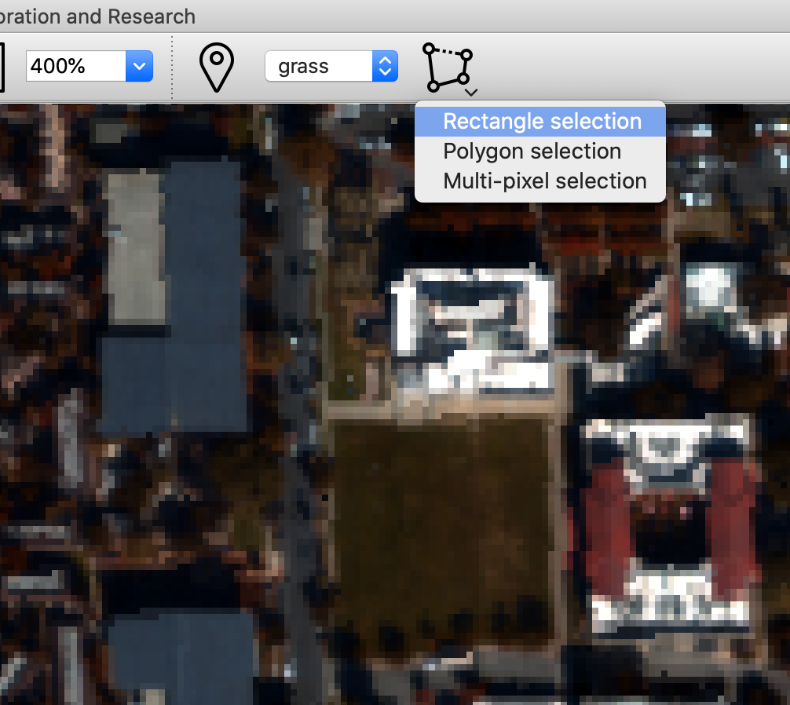
Tip: The status bar at the bottom of the UI provides instructions about how to create each kind of selection.
Here is the UI state after two Regions of Interest have been created - one named “grass” and the other named “solar panels”. Note that the “solar panels” ROI is comprised of multiple overlapping rectangle selections (this could also be done with a single polygon selection). It is not a problem to have overlapping selections in a Region of Interest; each pixel in the ROI will only be used once by operations on the ROI.
{kind=link}
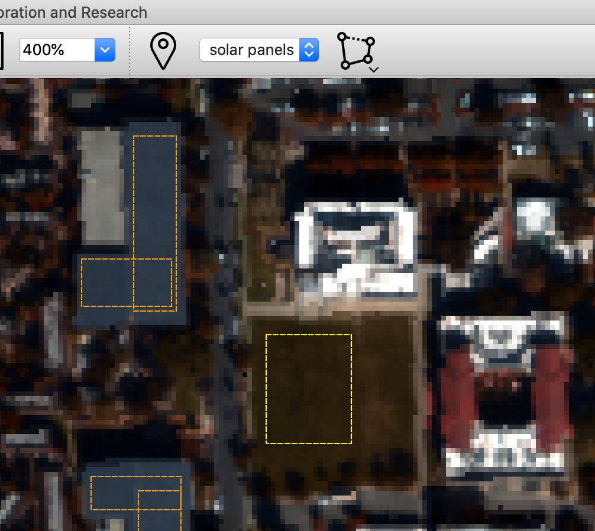
Once a Region of Interest has been created, right-clicking in the ROI’s selections will pop up a context menu providing various operations with the ROI.
The ROI’s information or display color may be edited
Individual selections in the ROI may be edited or deleted, or the entire ROI may be deleted
The average spectrum of the ROI may be displayed in the spectrum plot window
The spectra of every pixel in the ROI may be exported as an ASCII file
Import and export ROI’s as .geojson files
{kind=link}
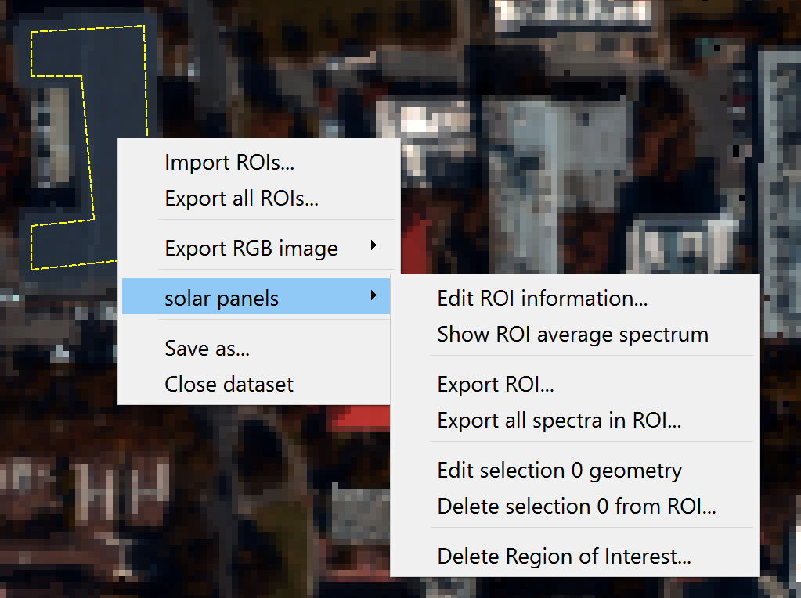
Saving and Subsetting Datasets#
There are two ways to save datasets with options for spatial and spectral subsetting. The first is by right clicking the image and selecting “Save as…” The second option is “Save dataset” in the file menu, selecting the image to export.
{kind=link}
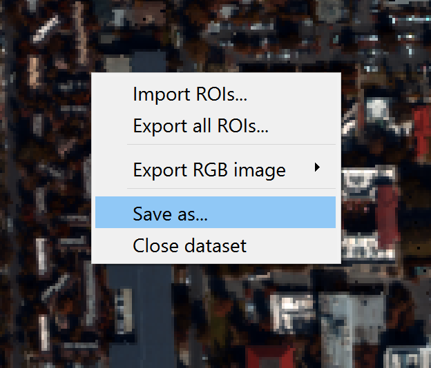
In the dialog box, click “Show Advanced” to access the following:
Data description
Data ignore value
Spatial subsetting (“Dimensions” tab)
Choose the wavelengths to save and set bad bands
Set default RGB or grayscale display bands
{kind=link}
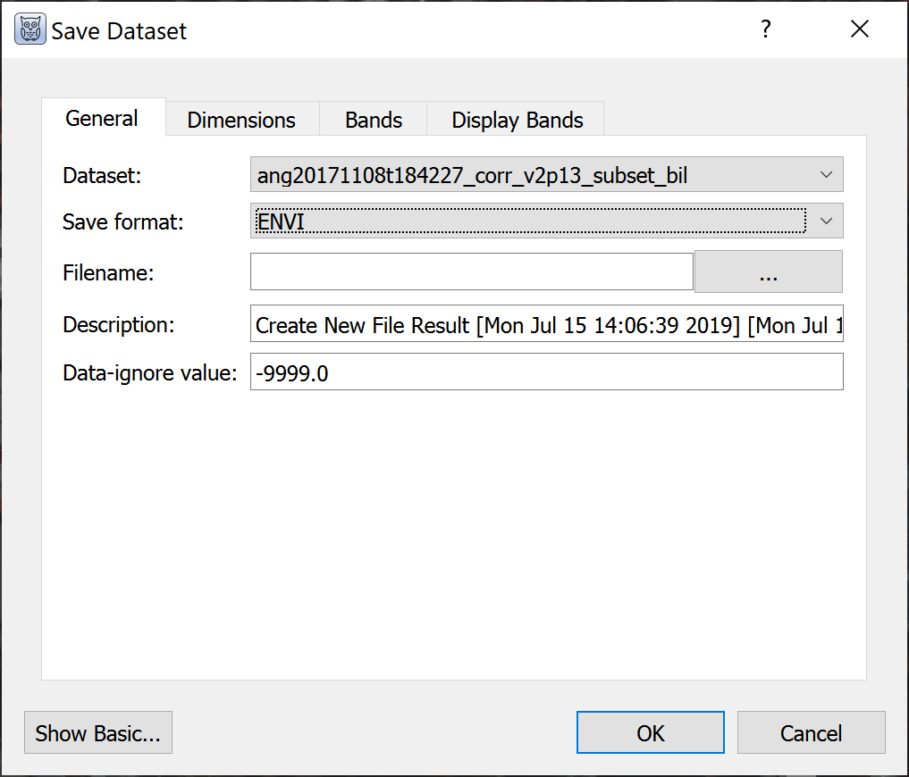
Spectral Plots#
Spectra can be viewed from any image dataset with multiple bands by clicking points on the main and zoom windows. Choose the plot symbol on the main toolbar. X-axis units are wavelengths if available; otherwise, units are band numbers. Spectra can be “collected” and retained on screen or in a list, turned on and off, and their colors changed. Clicking on the plot displays the (x, y) coordinates of the point. Right click on the plot to hide the coordinates of the selected point.
{kind=link}
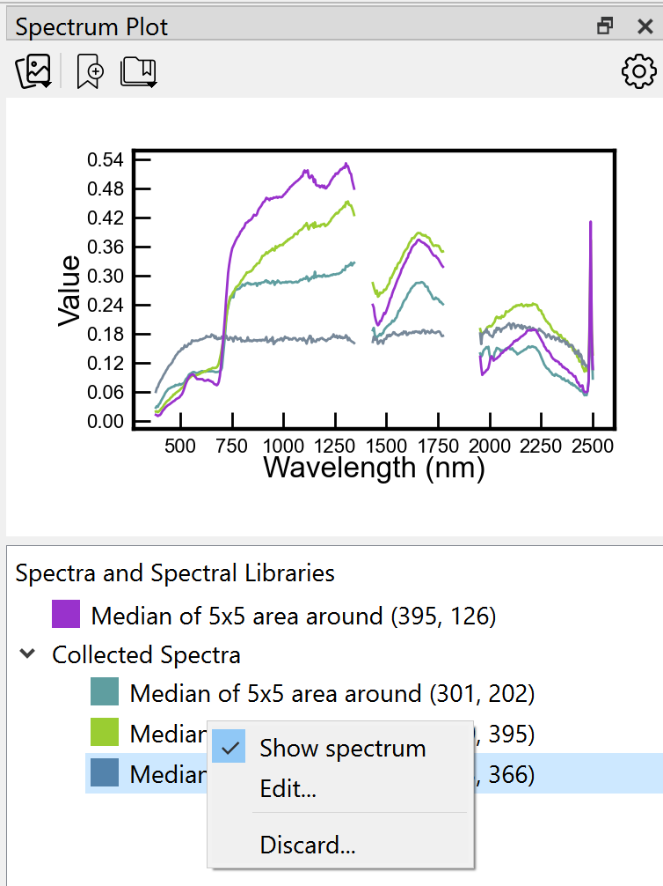
When multiple images are displayed in grid view, the plot will display spectra from any dataset that the user clicks. Using the upper left icon on the plot, the user can opt to always pull spectra from one particular dataset. This is particularly useful with linked datasets in grid view such that clicking on one image will display a spectrum from the same pixel in a linked image.
{kind=link}
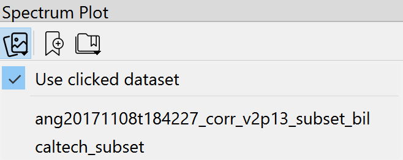
The import tool on the plot opens spectral libraries (.sli) and ASCII files with spectra. For ASCII files WISER opens a dialog box to select the column delimiter and identify which column(s) specify wavelength values.
{kind=link}
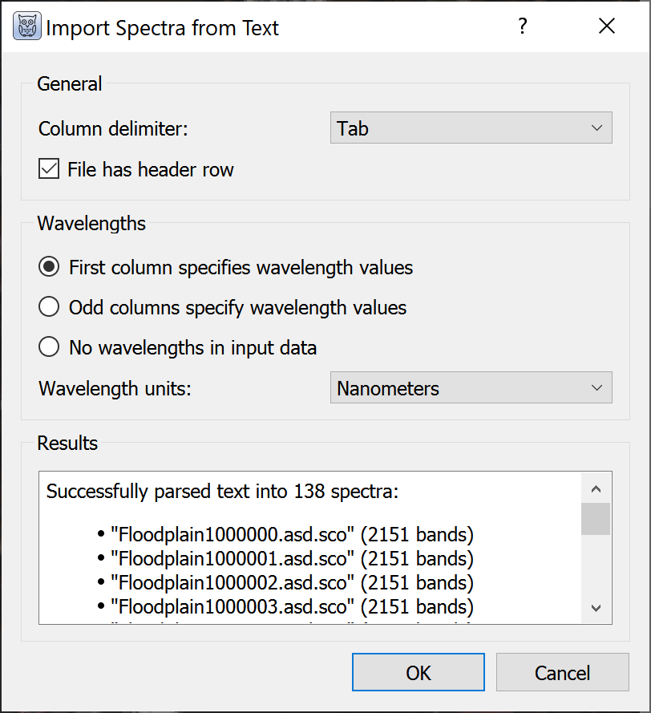
By default, imported spectra are listed but not displayed. All spectra can be shown or hidden by right clicking the name of the file or library in the list below the plot, or individual spectra can be displayed by right clicking on the spectrum name.
The spectral plot has many configuration options:
Plot and axis titles
Fonts and sizes
x- and y-axis ranges
Major and minor tick mark intervals
Number of pixels to average for each selected point, with options for mean and median
Display legend
{kind=link}
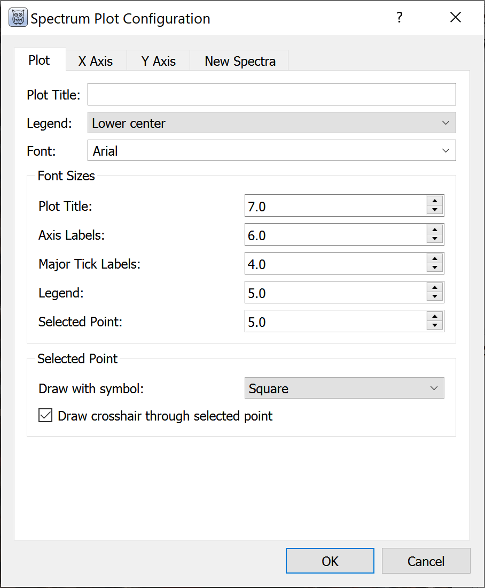
By right clicking on plots, WISER provides an option to “Export Plot to Image.” Available formats are EPS, PDF, PNG, and SVG with 72, 100, or 300 dpi resolution.
Analysis Tools#
WISER includes several built-in analysis tools accessible from the Tools menu and context menus. These tools operate on loaded datasets and produce new output datasets or visualizations.
Band Math#
The band math utility is available in the Tools menu. WISER band math supports the following operations: arithmetic, power/root, and comparisons/conditionals. Expressions can be saved for future use, and band math can be extended with user-defined functions in plugins. Variables can be mapped to full images, single bands, and spectra. Help can be toggled to see the band math operators.
{kind=link}
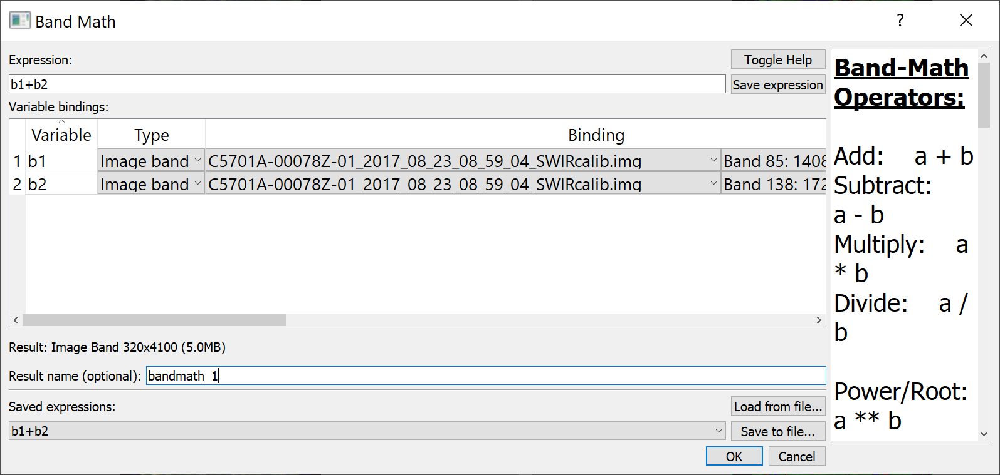
Note: Band math is not currently optimized to operate on very large images and may exceed the memory availability of the user’s computer. The expected size of the output is calculated to help users assess whether band math operations are feasible given the image size and computing resources.
Continuum Removal#
WISER has continuum removal built in. To use it, right-click on an image in the main image view and select Continuum Removal: Image.
{kind=link}
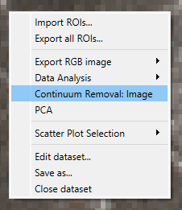
You can use it on an individual spectrum or all collected spectra by right-clicking in the Spectrum Plot and selecting either Continuum Removal: Single Spectrum or Continuum Removal: Collected Spectra.
{kind=link}
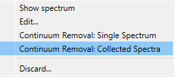
Principal Component Analysis (PCA)#
To use PCA, right-click on an image in the main view, select PCA in the context menu, then choose the number of principal components. Currently, only PCA using the covariance matrix is supported.
{kind=link}
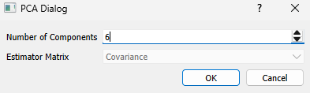
After PCA runs, a window displays all output data including the mean, variances, and components. This data can be saved to a file.
Interactive Scatter Plot#
To open the interactive scatter plot go to Tools → Data Analysis → Interactive Scatter Plot, or right-click on the main window when a dataset is showing and go to Data Analysis → Interactive Scatter Plot.
{kind=link}
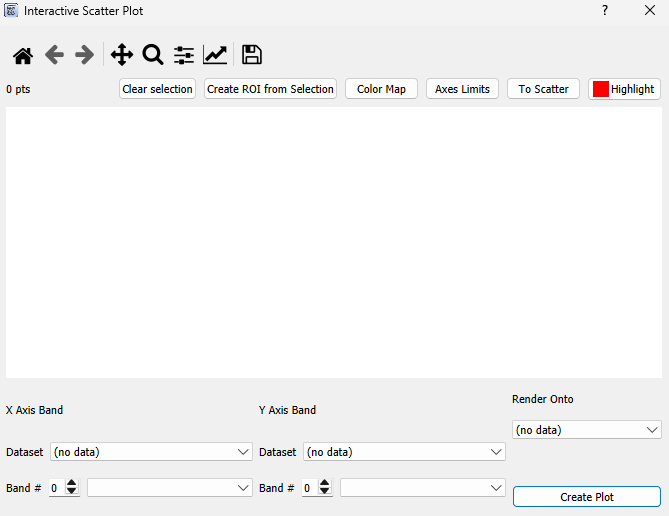
Select the band for the x-axis and the band for the y-axis, then select the dataset to render onto and press Plot. Once done loading, the scatter plot appears:
{kind=link}
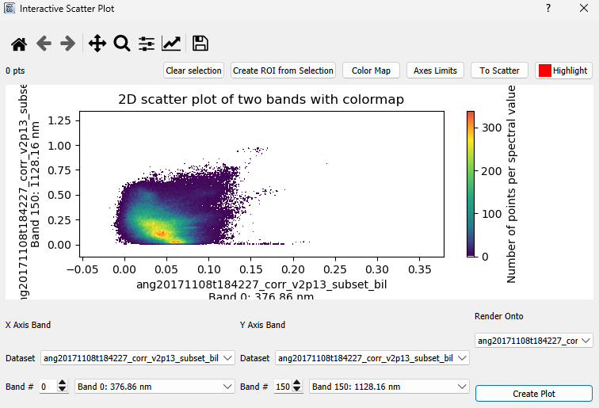
Click on the plot (while not panning or zooming) to create a polygon selection. The pixels corresponding to the points inside the polygon will be highlighted with a red circle in their center on the selected dataset.
Spectral Angle Mapper & Spectral Feature Fitting#
These algorithms share a similar UI and are grouped here. The basic premise:
There is a target image or target spectrum and one or more reference spectra to compare against.
When comparing a target image to a reference spectrum, each spectrum in that image is compared to the reference spectrum individually.
The comparison is performed over a specific wavelength range.
Spectral Angle Mapper (SAM): takes the angle between the two spectra.
Spectral Feature Fitting (SFF): takes the root mean squared error after scaling the spectra by a factor gamma (least-squares solution).
To use, go to Tools → Data Analysis → (Spectral Angle Mapper / Spectral Feature Fitting), or right-click on the main window and go to Data Analysis → (Spectral Angle Mapper / Spectral Feature Fitting).